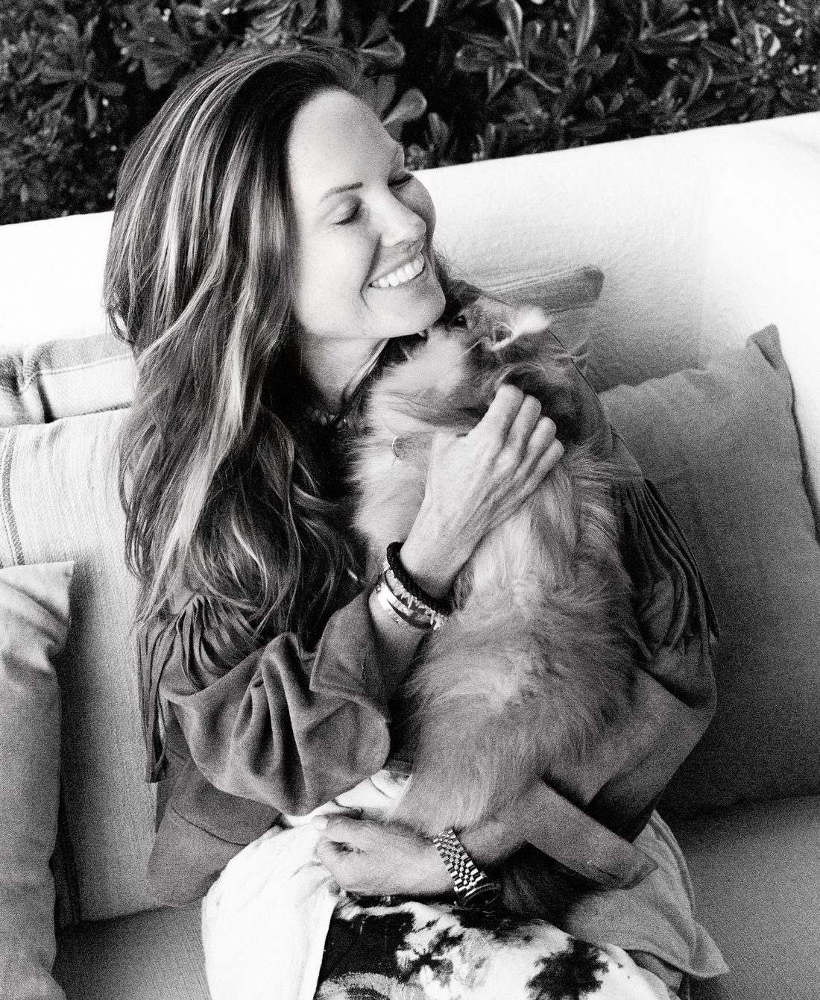

About
I'm a psychotherapist working in person in both Copenhagen and Ibiza, in Danish or English. There is no stronger force for personal growth than honest self-insight, and my practice rests on that conviction: the quality of your questions shapes the quality of your life.
I meet each person with deep respect and an unshakeable belief that we all carry an innate capacity to heal, when we are met with curiosity, courage, and care. Together we sit with the things that are hard to say out loud: grief, change, anxiety, and the quiet patterns that keep repeating, moving past the symptom toward what lives underneath.
My own journey began with a serious illness that changed the way I see life, and opened a realization of what we hold within us when we dare to listen inward and lift our gaze. Born in 1974, with a background as a Pilates instructor and psychotherapist, and having stood face to face with life and death myself, I've worked in personal development and therapy since 2018, learning to create safe spaces where both body and soul can find calm and strength.
Self-awareness is the mirror in which you learn to be free.
My work is carried by an open and spiritual approach, where there is room to let go, to reach for what has not yet found words. I believe true change happens when we dare to feel ourselves honestly, and when we are met with safety, presence, and respect.
Welcome to the best version of yourself. I look forward to meeting you.
At a glance
Psychotherapist &
Pilates instructor · since 2018
Danish
English
Copenhagen & Ibiza
In person
Individuals
Small groups
How I work
So much of life teaches us to push, strive, and hold it all together. Here, we practice something different: a space to soften, to listen, and to reconnect with the parts of yourself that long for freedom, flow, and deeper self-trust.
The body speaks in sensations, emotions, tension, and ease. When we learn to listen, it can guide us back to ourselves, to places of wholeness, vitality, and aliveness that may have felt out of reach.
There is no agenda for who you should become. Only an invitation to meet yourself more fully, with kindness and honesty. From that place, change happens naturally, like a river finding its way back into flow. ✨
In their words
Sabine helped me through what was probably the toughest chapter of my life. She has a rare combination of sharpness and warmth, she helps spot patterns fast, and challenges them in a way that feels safe enough to reset.
With her help I've rebuilt, not back to who I was, but into something stronger. More conscious. More whole and grounded. Healing with real focus, self-work and presence.
What makes Sabine stand out as a therapist is her ability to work with deep pattern recognition and genuine presence, not just talking, but actually shifting something. If you're looking for a therapist who combines therapeutic awareness, somatic sensitivity, and real focus on lasting change, she is the one.
Heidi
Sabine has been an important part of my personal growth journey. From our very first conversations, I felt genuinely seen, understood, and supported.
She has a rare ability to combine warmth, intuition, and deep insight in a way that makes even the most challenging work feel safe and meaningful. What sets her apart is her presence. She listens beyond the words and helps uncover patterns and perspectives that are often difficult to see on your own. Through her guidance, I have gained a deeper understanding of myself, greater self-awareness, and tools that continue to support me in everyday life.
Sabine brings both professionalism and heart to her work, and I wholeheartedly recommend her to anyone seeking real growth, healing, and lasting change.
Anna
Every process starts with a quiet, no-pressure conversation. Tell me a little about what's bringing you here.
Arrange a conversation →